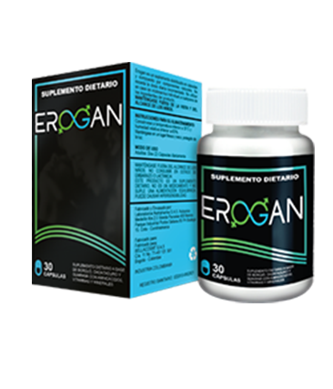

EN ISRAEL la prostatitis se cura en 2-3 semanas, únicamente, de una vez por todas.
(lea el método más adelante)
Mientras tanto: los médicos tacaños están en connivencia con las farmacias ocultando los fármacos efectivos y sacan todo el dinero de los hombres anualmente.
La prostatitis es la enfermedad más difundida entre los hombres mayores de 40 años. Aún más, los médicos notan una tendencia desagradable del «rejuvenecimiento» de esta enfermedad. Hombres de 30, 25 y hasta de 20 años se dirigen a médicos con sus «problemas» más a menudo.

Los médicos explican la popularidad de esta enfermedad por sus premisas: un hombre que:
- - lleve la vida sedentaria,
- - tenga actividad sexual irregular,
- - tenga malos hábitos,
- - haya superado enfermedades infecciosas,
- - tenga predisposición familiar,
- - haya estado estresado, enfermo o sobreenfriado,
seguramente tiene problemas con la próstata. Cuanto más haya premisas, tanto más pronto los tendrá. Alguien a 25 años, alguien a los 45, es la cuestión del tiempo.
Síntomas de la prostatitis: compruébelos:

En 2018, el departamento de la urología publicó las estadísticas estupefactas: más de 55% de los hombres mayores de 40 años se encuentran con los problemas de la glándula prostática en una u otra forma. Es muy fácil determinar la prostatitis sin tener educación médica, la mayor parte de sus síntomas es especial:
-
Dolor agudo o tirante:
- - abajo del abdomen, en el escroto;
- - en la entrepierna o en el pene;
-
Desorden de la micción:
- - micción frecuente, quemazón en la uretra;
- - sensación de «vejiga no vaciada»;
- - micción dificultada (flujo débil);
-
Trastorno del funcionamiento sexual:
- - libido reducido;
- - deterioro de la duración y la calidad de la erección;
-
Trastorno de la eyaculación:
- - la eyaculación precoz y problemas con su logro;
- - eyaculación débil.
-
Además, la alta fatiga e irritación del cuerpo.
Pero, a pesar de que la vida de muchos hombres se empeora, ellos viven con la prostatitis por años sin sospechar las consecuencias irreversibles a las que pueden llevar esas sensaciones desagradables.

Por una parte, se les puede entender, el diagnóstico de la próstata es un proceso desagradable y confuso para cualquier hombre que comprenda su sentido. Además, en la mayoría de los casos después de haber diagnosticado la prostatitis, la consulta al urólogo es una tortura anual. Los médicos quitan los síntomas más agudos con los fármacos «recomendados por los farmacéuticos». Sin embrago, con cada sobreenfriamiento o con la falta del régimen prescrito, la prostatitis «vuelve a aparecer».
Cómo se cura la prostatitis en España (y cómo NO debe curarse)
Lo peor es que no podrá deshacerse de la prostatitis aun si quiere mucho hacerlo.
El procedimiento normal de la cura de la prostatitis:
- Un hombre se dirige al hospital.Público o privado – no importa, que al final tendrá que pagar.
- El médico lo examina y le prescribe un montón de análisis unos de los cuales son innecesarios. Son por si a caso, a lo mejor aparece algo que se pueda curar. Además los análisis cuestan un dineral.
- Luego el médico diagnostica la prostatitis y prescribe «fármacos recomendados». Estos fármacos son para quitar los síntomas agudos pero ellos no curan la prostatitis crónica.Y, claro, el urólogo recomienda los fármacos de las empresas cuyas representantes le hayan dado más dinero. Todo el mundo conoce estos fármacos.
- De soborno a los fármacos “recomendados” para quitar los síntomas, los médicos prescriben el masaje rectal de la próstata o un tratamiento parecido con aparatos. Es un procedimiento humillante y muy desagradable – el masaje se hace con el dedo a través del ano. En general, son unas 10-14 sesiones de tal masaje. Cada sesión también debe ser pagada. En otros países europeos no practican esto más de 20 años, ¡porque los fármacos modernos permiten curar la prostatitis sin el masaje!

- Aparte del tratamiento básico, los médicos pueden prescribir unos fármacos para mejorar el funcionamiento sexual, la calidad de esperma, para «restablecer el cuerpo» de los antibióticos, etc.
Al final, un tratamiento de la prostatitis en costará de 30000 a 150000 euros, que los urólogos realmente crean el curso dependiente de las posibilidades financieras del paciente.Pero solamente se quitarán los síntomas agudos de la enfermedad. La prostatitis crónica volverá a aparecer una vez el hombre se enfríe o deje de seguir el régimen prescrito. Como resultado,tendrá que pagar un dineral anualmente— es cómo funciona el negocio entre urólogos y farmacéuticos.
Cómo los hombres de Israel curan la prostatitis (como DEBE curarlo)
En Israel, para curar la prostatitis, no hace falta dirigirse al médico.Al aparecer los primeros síntomas, hay que ir a la farmacia para comprar el remedio de los abuelos, que no llega al mercado de ¡solo porque ayuda a curar la prostatitis crónica completamente (de una vez por todas)! Naturalmente, tal fármaco no traerá beneficio a la mafia española de farmacias – es mucho mejor quitar cada año los síntomas agudos por un dineral en vez de curar la enfermedad con un remedio económico y disponible a todos.

A diferencia de nuestro país, en Israel el sector de seguros es muy desarrollado. Las empresas de seguros no están interesadas en que casa segundo hombre se dirija a los médicos 2 veces al año — son ellas que tienen que pagar las consultas, y los médicos cobran bien en Israel. Al revés, las empresas quieren que el tratamiento sea los más efectivo y rápido posible. De una vez por todas.
En Israel, los intereses de las empresas de seguros han vencido la mafia de farmacias y, afortunadamente, los hombres siempre pueden encontrar el remedio efectivo contra la prostatitis en venta...
¿Cambiará la situación para lo mejor?
Por desgracia, no podemos esperar un cambio positivo de farmacias y médicos españoles – el negocio farmacológico trae billones de euros a los funcionarios más altos de España.
Sin embrago, hoy no es obligatorio comprar medicinas en farmacias. Se puede hacerlo online en sitios especiales. Hace muy poco, uno de los fármacos más efectivos de Israel –Erogan ha llegado a España. Y casi inmediatamente ha ganado la gloria nacional.
Vamos a comparar Erogan con el remedio contra la prostatitis más famoso en España recomendado por las farmacias, Prostamol Uno:
|
 Erogan |
 Prostamol Uno |
|
|---|---|---|
| Precio: |
Se puede obtener |
Unos 1500 euros por 1470 supositorios. Curso recomendado: 3 cajas = 4500 euros. |
| Presentación: | cápsulas: 20 en una caja | supositorios: 10 en una caja |
| Efecto: | Cura completamente la prostatitis, incluso la crónica. De una vez por todas. | Quita solo los síntomas agudos de la prostatitis – dolores y desórdenes de micción. |
| Efecto extra: | º Aumenta libido º Previene la eyaculación precoz º Mejora la potencia º Normaliza el funcionamiento de la vejiga º Mejora la condición de los vasos" |
Licuefacción, aumento del peristaltismo |
| Efectos secundarios, daños al cuerpo | No hay. Composición 100% natural. | º Con la administración frecuente, lleva a los cambios drásticos en la glándula prostática º Reduce la potencia º Causa problemas del intestino º Suprime la inmunidad, desarrolla las alergias º Causa dolor agudo en el estómago" |
| Modo de funcionar: | Funciona en el complejo y mejora la condición de la próstata gracias a sus únicos 11 componentes naturales, tiene el efecto antiinflamatorio y tónico. Limpia la próstata de toda la flora patogénica, mejora sus funciones y estructura. Se recomienda para curar la prostatitis crónica, congestiva y bacterial. | Temporalmente quita el dolor en la próstata, camuflando el curso de la enfermedad. Pero después, la enfermedad vuelve a aparecer. |
| Composición: | Componentes naturales vegetales y vitaminas | Samprost, estearato cálcico monohidratado, crospovidona, citrato de trietil, dióxido de titanio y otros elementos químicos |
| Garantías: | 365 días de garantía del productor | ninguna garantía |
En España, ¡el productor ha conseguido hacer este remedio disponible para todos y cada uno! Después de haber negociado "con las personas correctas" se ha podido lanzar el programa nacional "Salud masculina". Los fines del programa: proporcionar a cada hombre la posibilidad de curar la prostatitis sin llegar a cáncer o a morir, independiente de su condición financiera. Según este programa nacional, recibirá Erogan totalmente
Se puede obtener Erogan en el sitio oficial.
Existe una campaña de gran escala contra este fármaco iniciada por las cadenas de farmacias más grandes del país. Es posible que muy pronta esté fuera de venta. Recomendamos adquirir Erogan mientras se pueda hacerlo. Hasta 26 de diciembre 2019 (incluso) el fármaco se distribuirá
Puede obtener Erogan totalmente $ 108.700 . Deje la solicitud para participar en el programa.
Hasta el final de la acción:
Sitio oficial de Erogan en España

Aza Kaufman, jefa del Instituto de fármacos biomedicinales de Israel Paul Erlich, profesora del departamento de urología
Tratamiento no invasivo de la prostatitis con el suplemento natural a base de GOTU KOLA fue descubierto por la uróloga israelí Aza Kaufman en el contexto de investigaciones del Instituto de fármacos biomedicinales de Israel Paul Erlich.
Aza Kaufman fue primera en comprobar cllínicamente el 98% de eficacia de su método y empezó a usar los suplementos a base de Erogan (GOTU KOLA) para curar la prostatitis aguda y crónica.
A partir del 1996 — los suplementos a base de Erogan llegan a ser estándar medicinal y se recomiendan para curar a los enfermos en Israel, y más tarde, en muchos otros países.
El único fármaco cuyas efectividad y seguridad reconocidas por la comunidad científica de Israel, se vende en España de la marca "Erogan".
Comentarios
Miguel D (Madrid)
¡Gracias por este artículo tan interesante! En España todo está tan corrupto, qué bien que todavía tengamos acceso a Internet. He pedido un Erogan$ 108.700 . Voy a curarme.
José Moliner (Ovied)
¡Estoy totalmente de acuerdo! Erogan es una maravilla. Lo compré en Italia, donde estuve descansando el verano pasado, pero por casi treinta euros. Antes sufría mucho de prostatitis crónica, unos 10 años como mínimo. Traté de curarla pero como dicen otros comentarios pude conseguir solo el efecto a corto plazo. Ahora, cuando tomo el Erogan, me he curado. Ya más de medio año no ha habido ni un síntoma. Antes ni podía soñarlo. Lo recomiendo a todos los hombres. ¡Seguro que os ayudará!
Fernando (Madrid
Lo he pedido. Realmente he recibido un Erogan$ 108.700 . ))) Estoy muy sorprendido. ¡Gracias!
Carlos G(Mérida)
Yo también he tomado este medicamento. Lo compré en la página web pero no había ningunas ofertas y costaba unos 30 euros. Pero no lo lamenté, lo importante es que me ayudó a curar la prostatitis en 2 semanas aproximadamente sin tener que hacer masajes.
Migue(Alicante)
Lo pedí
Bernardo Torre (Barcelona)
Ví una vez una emisón sobre el negocio farmacológico en España. Fue un tipo de investigación. Entre otras cosas mencionaron este medicamento. Dijeron que ahora está disponible pero puede desaparecer pronto del mercado. Hay que tomarlo mientras lo hay.
Pablo Zuñiga (Huelva)
Tengo prostatitis crónica desde la edad de 28 años. Ahora tengo 41. Lo he curado 2 veces cuando tuve agravamientos fuertes. La última vez estuve a punto de morir. Los médicos me dijeron que mi prostatitis estaba a punto de transformarse en el cáncer de próstata. Por eso aconsejo a todos los que sufren de prostatitis que la curéis cuanto antes. Es una enfermedad muy peligrosa.
Josefa (Sevilla)
Hay que pedir uno para mi marido. ¡Gracias!
Ramón (Córdoba)
Es verdad, he recibido uno$ 108.700 . Nunca he visto una oferta parecida. ¡Gracias a los fabricantes!
Victor(Madrid)
Adenorfin es el mejor medicamento. Estoy de acuerdo con el artículo y todos los comentarios buenos. Lo tomé hace unos 3 meses. ¡Me he curado totalmente! Antes sufría de prostatitis unos años, tenía problemas de erección, acababa muy rápido. Ahora todo está bien.
Andrés Jiménez (Pamplona)
Es un medicamento estupendo.
David U. (Soria)
He leído más sobre el Erogan en la página web. Me ha impresionado mucho. Lo he pedido. Me han dicho que lo podré recibir ya dentro de 5 días. Es muy cómodo.
Juan(Santander)
Chicos, es algo fantástico. Lo recibí la semana pasada. Ahora no tengo ni un síntoma de prostatitis. No me duele, no tengo ganas de orinar con frecuencia y no hay dolores al orinar. Además se me mejoró la potencia sexual y puedo durar más. Me siento genial. Vale la pena comprarlo, yo lo compraría incluso por 30 euros. Es muy eficaz.